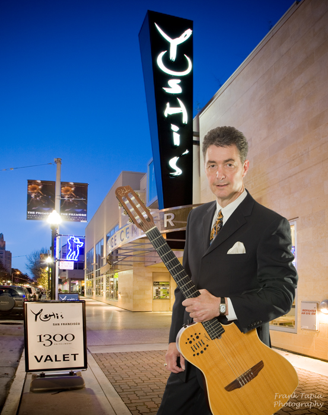

Eddie Pasternak at Yoshi's
Published Mar 28, 2010

The Chronicle’s pick for the weekend in October 2009 heralded what became a 5 month stay for Eddie’s Trio at Yoshi’s San Francisco… Andrew Gilbert wrote : ” While the club features an international roster of artists, the lounge showcases some of the region’s most eloquent improvisers - led by veteran guitarist Eddie Pasternak, an economically swinging player with an affinity for the Brazilian songbook. He’s joined by flute & vibraphone expert Roger Glenn and a regular rotation of extroverted piano talent, including Marcos Silva, Larry Dunlap and David K. Marthews.”